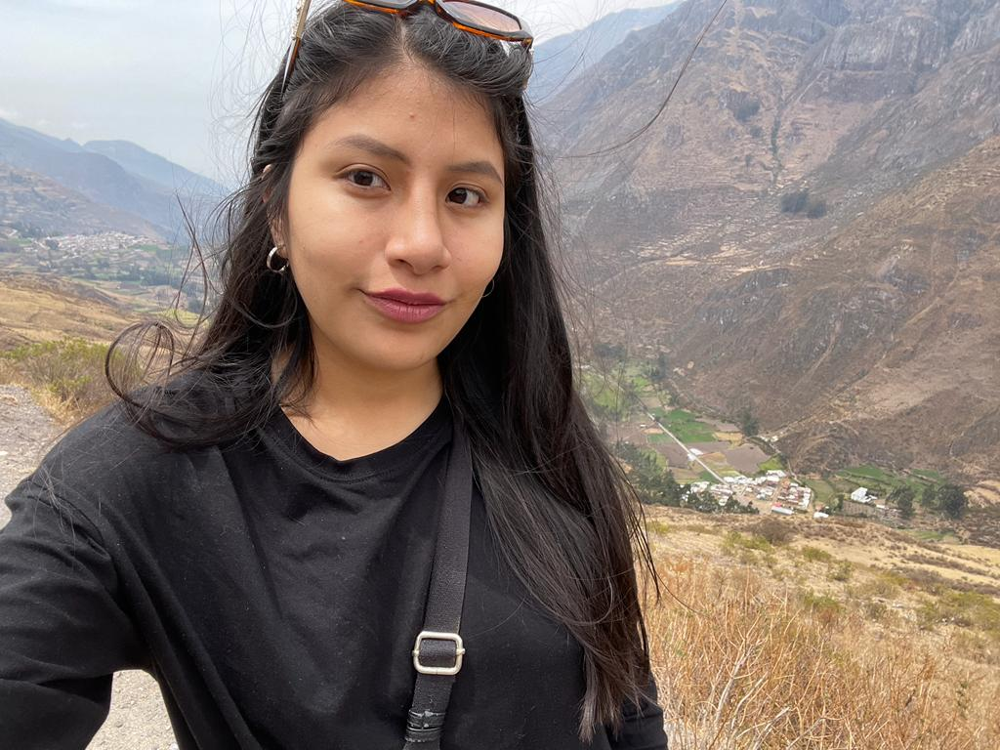
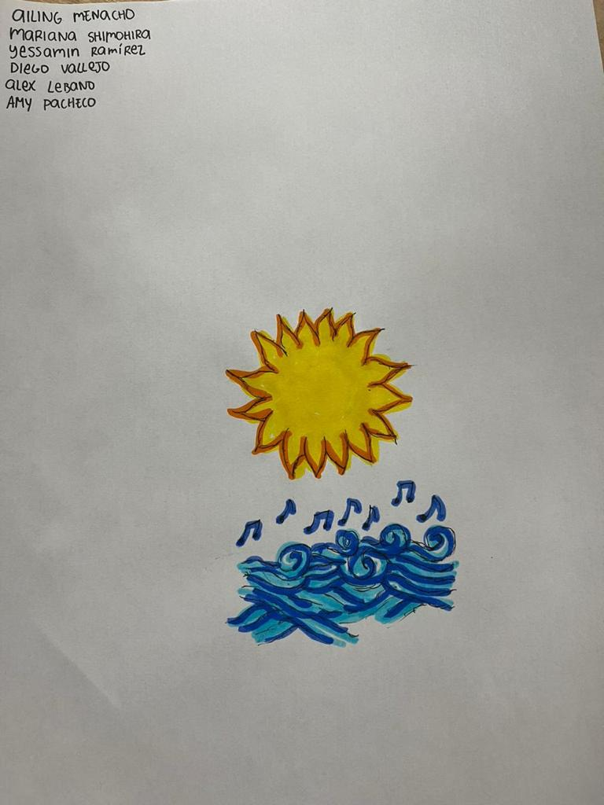
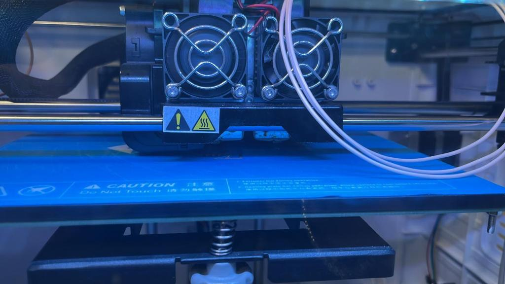

|  |
Hola, soy Amy!! Estudiante de Publicidad y Marketing Digital, actualmente curso mi octavo ciclo, trabajo como asistente de marketing y freelance comercial. Me apasiona viajar, he recorrido casi todo el Perú y mi meta es empezar a recorrer latinoamerica este año. |
|  |
Para mi clase de Laboratorio de Innovación 2, nos dejaron un proyecto de impresión 3D, fue algo básico para iniciar y conocer cómo funciona el ejercicio en caso queramos hacer impresiones más elaboradas a futuro. |
|  |
Iniciamos realizando el boceto, una imagen que representó al grupo que me tocó, algo en común que teníamos era el amor al verano y la música, así nació la idea del sol incrustado por una nota musical. Posteriormente, se llevó a digital para que pueda ser impresa y compartida con el equipo. |